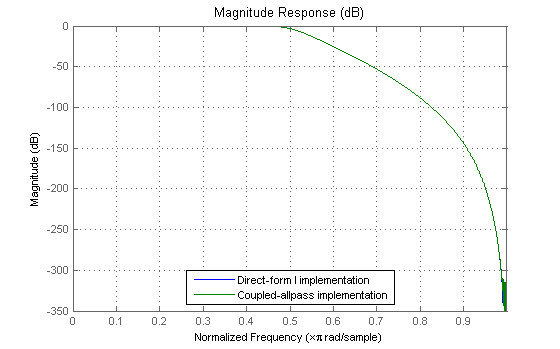
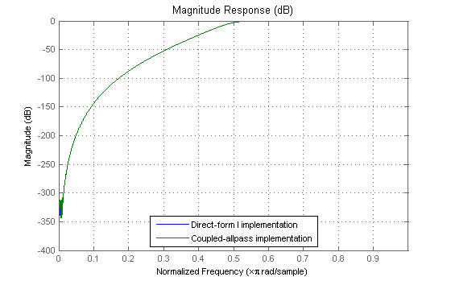
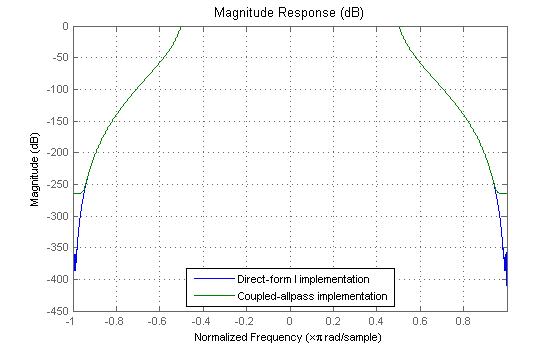
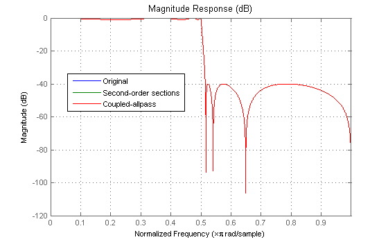
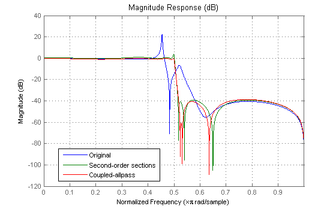

This demo shows some of the key features of the TF2CA (Transfer function to coupled-allpass)and TF2CL (Transfer function to coupled-allpass lattice) functions. These functions can factor certain IIR filters into two allpass filters in parallel, which we refer to as a coupled-allpass implementation.
Certain implementations of IIR filters using a coupled-allpass structure are advantageous for quantization purposes (e.g. using lattice allpass).
Consider the following lowpass Butterworth filter, created with BUTTER.
Note that b is a symmetric vector. We can write this filter as the sum of two allpass filters, H1(z) and H2(z) as follows:
H(z) = B(z)/A(z) = 1/2*(H1(z) + H2(z));
[b,a] = butter(9,.5);
We can get the coupled-allpass coefficients with TF2CA.
d1 and d2 are vectors of coefficients of the denominators of the two allpass filters H1(z) and H2(z). Because H1(z) and H2(z) are allpass filters, the numerators are simply the reversed (and complex conjugated) version of the denominators. For example:
0.0104 + 0.3644z^(-2) + z^(-4)
H1(z) = ---------------------------------------
1 + 0.3644z^(-2) + 0.0104z^(-4)[d1,d2] = tf2ca(b,a); h1 = dfilt.df1(0.5*fliplr(d1),d1); h2 = dfilt.df1(0.5*fliplr(d2),d2); Hca = parallel(h1,h2); hfvt = fvtool(b,a,Hca); legend(hfvt,'Direct-form I implementation','Coupled-allpass implementation'); set(hfvt, 'Color', [1 1 1])
If the numerator is antisymmetric, as in this filter, the decomposition changes to:
H(z) = B(z)/A(z) = 1/2*(H1(z) - H2(z));
[b,a] = butter(9,.5,'high'); [d1,d2] = tf2ca(b,a); h1 = dfilt.df1(0.5*fliplr(d1),d1); h2 = dfilt.df1(-0.5*fliplr(d2),d2); Hca = parallel(h1,h2); set(hfvt, 'Filters', [dfilt.df1(b,a) Hca]); legend(hfvt,'Direct-form I implementation','Coupled-allpass implementation');
For certain filters, such as this one created with CHEBY1, it is not possible to find a factorization with real allpass filters.
However, a complex factorization is still possible. The decomposition changes to:
H(z) = B(z)/A(z) = 1/2*(conj(C)*H1(z) + C*H2(z));
where C is a complex scalar with magnitude one.
In these cases one can use only one complex allpass filter to implement the original IIR filter. This is because H1(z) and H2(z) turn out to be the complex conjugate of each other. So that:
Y(z) = H(z)*X(z) = Real(conj(C)*H1(z)*X(z)) = Real(C*H2(z)*X(z)).
[b,a] = cheby1(10,.5,.5); [d1,d2,c] = tf2ca(b,a); h1 = dfilt.df1(0.5*conj(c)*fliplr(conj(d1)),d1); h2 = dfilt.df1(0.5*c*fliplr(d1),conj(d1)); Hca = parallel(h1,h2); set(hfvt, 'Filters', [dfilt.df1(b,a) Hca]); legend(hfvt,'Direct-form I implementation','Coupled-allpass implementation');
We now compare the effect of quantizing the coefficients. Consider the following filter, created with ELLIP. We find the lattice coupled-allpass decomposition with TF2CL. On the other hand, we find the second-order sections from ZP2SOS (note that we don't want to form the direct-form transfer function first and then find the second-order sections because this will introduce more roundoff problems).
[z,p,k] = ellip(7,1,40,.5); % This is preferable for second-order sections [b,a] = zp2tf(z,p,k); % This is necessary for coupled-allpass [k1,k2] = tf2cl(b,a); [s,g] = zp2sos(z,p,k);
Now we create three filters: The direct form implementation, the SOS implementation, and the coupled-allpass lattice implementation
Horig = dfilt.df1(b,a); Hsos = dfilt.df2sos(s,g); allpass(1) = dfilt.latticeallpass(k1); allpass(2) = dfilt.latticeallpass(k2); scalar(1) = dfilt.scalar(0.5); scalar(2) = dfilt.scalar(0.5); branch1 = cascade(scalar(1),allpass(1)); branch2 = cascade(scalar(2),allpass(2)); Hca = parallel(branch1,branch2); set(hfvt, 'Filters', [Horig,Hsos,Hca]); legend(hfvt,'Original','Second-order sections','Coupled-allpass');
We can now compare the double precision original magnitude response with the quantized second-order sections and the quantized coupled-allpass.
set(Horig,'Arithmetic','fixed','CoeffWordLength',8); set(Hsos,'Arithmetic','fixed','CoeffWordLength',8); set(allpass,'Arithmetic','fixed','CoeffWordLength',8); set(scalar,'Arithmetic','fixed','CoeffWordLength',8); set(hfvt, 'Filters', [Horig,Hsos,Hca], 'ShowReference', 'off'); legend(hfvt,'Original','Second-order sections','Coupled-allpass');
The coupled-allpass implementation tends to be more robust to quantization in the passband, while the second-order section implementation tends to be more robust in the stopband. This is typical of these implementations.